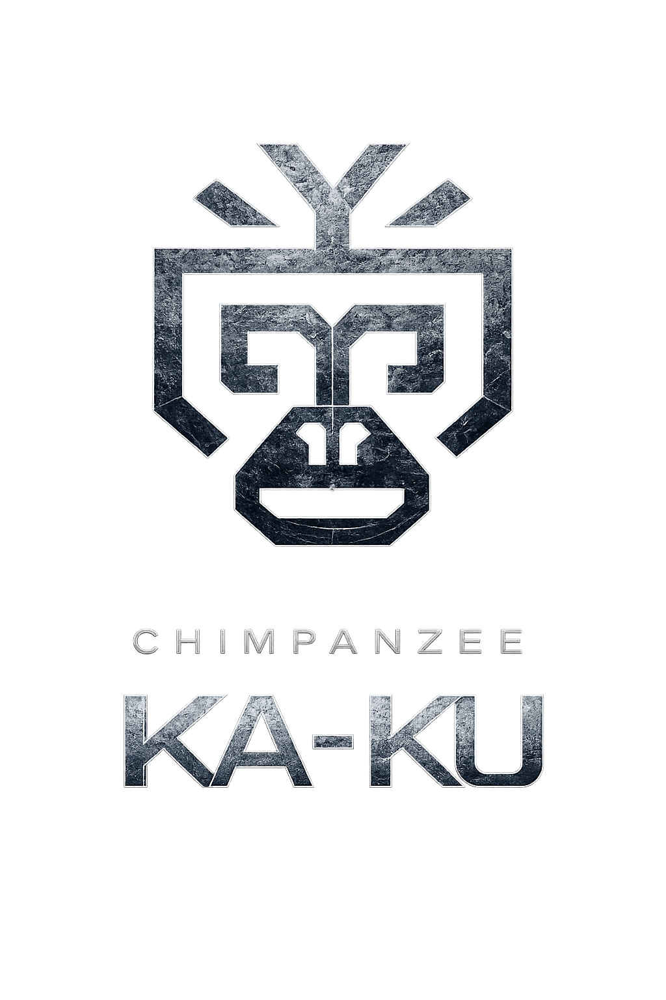
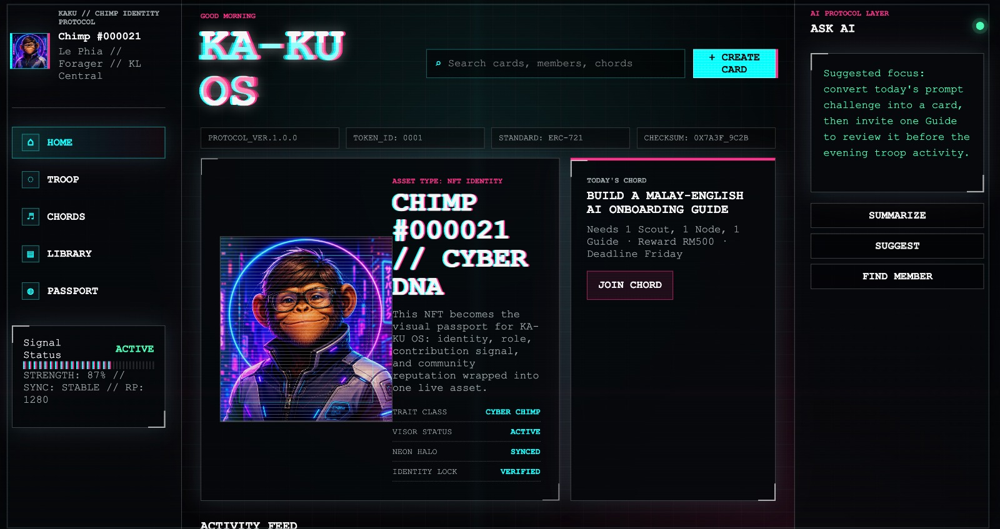

Prompt Thinking
Learn to structure context, ask better questions and think iteratively with AI.
AI THINKING COMMUNITY · LEARN · PRACTISE · EVOLVE
A practice-led community for professionals, entrepreneurs, business leaders and everyday learners exploring how AI is changing the way we think, work and create.
JUST RM1 A DAY · ONE YEAR OF COMMUNITY LEARNING

AWARENESS · IDENTITY · COMMUNITY01 · WHY CHIMPANZEE KA-KU?
More than sixty years ago, Jane Goodall’s observations helped the world see that chimpanzees learn, adapt, use tools and pass experience through their communities.
Today, AI is becoming a new environment for work and life. The most valuable capability is not pretending to know everything—it is being willing to observe, experiment, adapt and keep learning.
Chimpanzee reminds us to set aside certainty. Ka-Ku represents awakening: meeting change with humility, openness and courage.
02 · THE KA-KU MOMENT
Every Chimp begins with a Ka-Ku Moment.
03 · WHAT WE PRACTISE TOGETHER
Ka-Ku is not about becoming an AI expert overnight. It is about steadily updating our judgement, creativity and capacity to act.
Learn to structure context, ask better questions and think iteratively with AI.
Exchange practical ways people are using AI in work, business and everyday life.
Experiment in real situations, learn from mistakes and share what becomes useful.
Learn with others, stay connected and grow through collective experience.
04 · HOW A CHIMP EVOLVES
Every member is called a Chimp. These roles describe how someone may participate and contribute as they grow with the community.
05 · CHIMP COMMUNITY PASSPORT
Every member receives a Chimp Community Passport—a living record of who they are, how they participate and what they contribute.
A recognisable member identity and unique Chimp ID inside the community.
See your current participation role, from Scout through Keeper.
Keep track of practices, shared knowledge and community activity.
Make useful participation and support for others more visible.
Interface shown is a concept preview. Final passport features will be introduced as the community platform develops.

06 · COMMUNITY PRINCIPLES
JOIN CHIMPANZEE KA-KU SOCIETY
Join a community learning to observe, experiment, adapt and move forward together.
That is just RM1 a day.
Sign up and join the Society ↗Have a question? Talk to Anna →